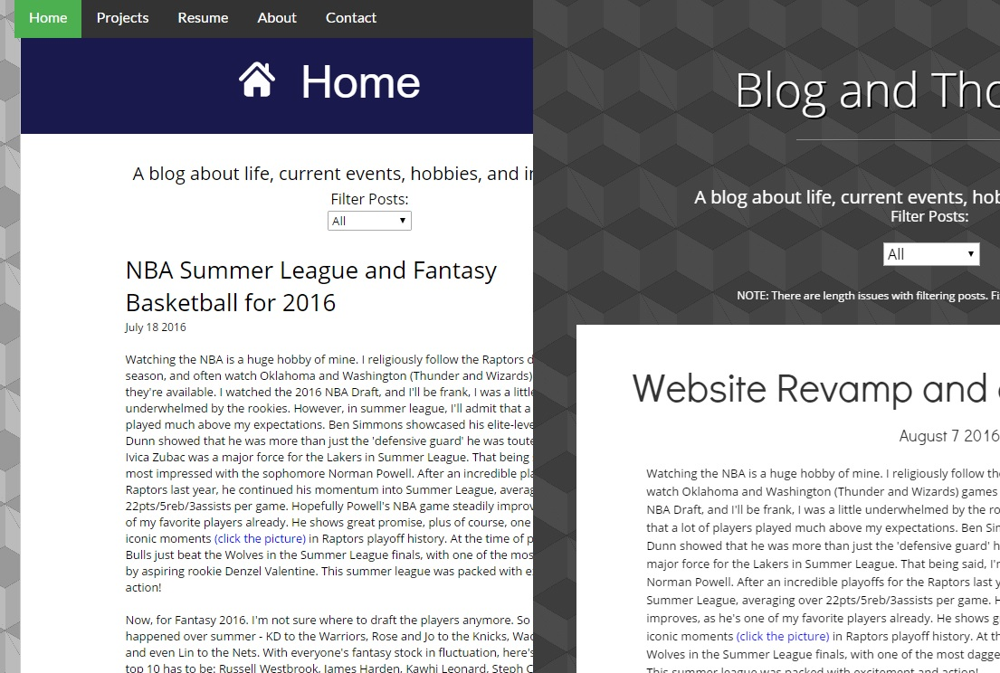

Out with the Old and In with the New
August 7 2016
Whew! It's finally the end of school! Not that I don't like school, but... I don't really like school. After a grueling period of May-August where every day was filled with me trying to figure out the ugly syntax of C and wondering why pointers to pointers didn't point to the appropriate pointers, it's finally over. That being said, of course, it's exam time...
Yuck.
Thankfully, I just finished by CSCB36 (Introduction to the Theory of Computation) exam. I think I did fairly well, handling the DFSA/NFSA, PDA/CFG questions in turn, as well as killing it on the induction questions. Next up are CSCB09 (Software Tools and Systems Programming), and CSCB07 (Software Design). I'm really worried about CSCB09, the syntax of C is going to make me lose a few years off my life, I wager. My professor is also someone who likes to test for the minute understandings, not general concepts either. Well, good luck I guess.
For now, though, I get a breather. From now until August 10th, I'll be finally able to relax and clear my mind for a bit. As you can well see, I've completely redesigned my website from the ground up. The old website can be found here. The new website is more responsive, more clear-cut, and in my opinion - I hope you share it - more beautiful. I think that this website will be my final iteration for the next while at least, so aside from fixing bugs here and there and posting blog entries, I think I'll leave it for the time being. Below is a comparison of the blog page of the old and new websites.
Wait. I ALSO GOT ACCEPTED TO HACK THE NORTH! YAY! It's a shame that my friends didn't though, I really wanted to go together. Still, being reinvited to one of Canada's premier hackathons is a great honor, and I'm sure it'll be a lot of fun. Plus, networking and free food. Oh right, making stuff to. Can't wait.

NBA Summer League/Fantasy Basketball 2016
July 18 2016
Watching the NBA is a huge hobby of mine. I religiously follow the Raptors during regular season, and often watch Oklahoma and Washington (Thunder and Wizards) games when they're available. I watched the 2016 NBA Draft, and I'll be frank, I was a little underwhelmed by the rookies. However, in summer league, I'll admit that a lot of players played much above my expectations. Ben Simmons showcased his elite-level passing, Kris Dunn showed that he was more than just the 'defensive guard' he was touted as, and even Ivica Zubac was a major force for the Lakers in Summer League. That being said, I'm still most impressed with the sophomore Norman Powell. After an incredible playoffs for the Raptors last year, he continued his momentum into Summer League, averaging over 22pts/5reb/3assists per game. Hopefully Powell's NBA game steadily improves, as he's one of my favorite players already. He shows great promise, plus of course, one of the most iconic moments (click the picture) in Raptors playoff history. At the time of posting, the Bulls just beat the Wolves in the Summer League finals, with one of the most dagger plays by aspiring rookie Denzel Valentine. This summer league was packed with excitement and action!
Now, for Fantasy 2016. I'm not sure where to draft the players anymore. So much has happened over summer - KD to the Warriors, Rose and Jo to the Knicks, Wade to the Bulls, and even Lin to the Nets. With everyone's fantasy stock in fluctuation, here's my tentative top 10 has to be: Russell Westbrook, James Harden, Kawhi Leonard, Steph Curry, Anthony Davis, Kevin Durant, LeBron James, DeMarcus Cousins, Chris Paul, and Damian Lillard. Westbrook was already insane with Durant out during the 2014-2015 year, having a period where triple-doubles and 40pt games were almost second-nature for him. Now, imagine him with both Ibaka and KD out... for good. Harden and Kawhi both have the reins to their franchises, Harden with the departure of Howard, and Kawhi with the retirement of Duncan. I believe we'll see some huge games by both players, and both are well-rounded enough to place in the top 3. Steph of course loses some value with KD's arrival, taking less shots and being asked to do less (pretty sure they won't gun for 73 wins again), means that his production will drop. Davis, after a fairly disappointing year all things considered, is poised for a bounce-back season with Jrue finally healthy and a promising 3&D rookie in Buddy Hield to lighten his workload. KD, LBJ, and CP3 are fairly self-explanatory, but I believe that DMC and Lillard are suitable dark horses. DeMarcus was unstoppable during the second half of the season (dropped 24, 48, and 56pt games on me consecutively). Lillard, well, I'm just a huge fan of his game, and this is my homer pick. I can't wait for the NBA to begin again so I can get back to watching shooty hoops.

Making mock shells: Two at a time.
July 16 2016
One for CSCB07 (Software Design) and one for CSCB09 (Software Tools and Systems Programming). They were both quite tedious to implement. For the CSCB07 mock shell, a team of four members, Angelo, Prantar, Raphael and I, worked together to develop it over a period of two months. We employed agile development methodologies and collaborated together to develop a JShell (aptly named because the mock Shell was coded in Java) that could handle basic commands like cd, mkdir, ls, cat, grep, echo, and more. We didn't get around to implementing pipe functionality, though, although the JShell does have I/O redirection.
For the second mock shell, I coded the FShell, or fsh. The FShell stands for Feeble Shell, because it acts and works like a regular shell, except it doesn't have all the functionalities. Fsh can handle all commands shell can, except for cd. One major difference between FShell and JShell, is that FShell actually has pipe functionality, meaning it can redirect the output from one command to become the input for another command. However, because fsh is feeble, it can only work with one pipe. Fsh is primarily coded in C, supplied with some starter code given by the professor of CSCB09, Alan Rosenthal.
In the attached image, both JShell and FShell are shown at work, testing some of the basic functionality of commands like ls, mkdir, pipes, and I/O redirection.

Figma and Hack the North
Jun 6 2016
My friends recently started talking about a new product currently in Beta called Figma. I think this looks promising! As someone who thinks design is really cool (although I'm not very good at it, haha), this could be a really useful product. What I see is something like Google Doc's collaborative nature coupled with the version control of Git. If the Beta can live up to everything it promises, I could see this being the next big tool in any good designer's toolkit.
In other news, Hack the North finally opened their registration! After volunteering for them in 2013, I always thought that HTN was one of the premier hackathons in Canada. A couple of my friends and I have applied, and if I hear back from them, that'll be awesome. When I was volunteering back in 2013, they had this app called RememberAll or something. Basically, it could call up an audio recording of something that happened during the day by verbal keywords alone. I can't wait to see what innovative, unique, and crazy ideas they'll come up with this year.
The Center Island Toronto International Dragon Boat Race Festival (TIDBRF) is coming up in less than two weeks. To say that we, as a team, are jittery is an understatement. Jittery? Yeah. Unprepared? Hell, no! After getting a regatta under our collective belts, as well as twice-weekly practices on-the-water, we're confident we can really make a splash!
Milton Dragon Boat Regatta
May 29 2016
On May 21st 2016, the University of Toronto Scarborough's very own Crimson Tide Dragon Boat Team went on to participate in the Milton Dragon Boat Regatta, Lively Dragon.
Man oh man was it fun. Everyone got up early in the morning - think 4AM for most people - arriving with only a few hours of sleep (I know I had four hours myself, some people had less than two...) DESPITE ALL THAT, everyone was surprisingly energetic and excited - for most of us, it was our first race, ever!
We started off with a placement 500m race, in which we did fairly well. We placed third amongst a total of six teams, which was fairly amazing considering we were facing the leading University teams (Rotman's Liquid Assets, and UTSG's Iron Dragons). We went on to race another 2 x 200m, another 500m race, and ended our day with a 2km race. The 2km, although we were all exhausted, was probably the most amazing part of the day. We started off strong, overtaking one team on our first turn (race was organized so that team departures were staggered). By the end, we ended up overtaking a total of FIVE different teams.
Never satisfied, we immediately turned our sights to the Toronto International Dragon Boat Race Festival to be held in Center Island. Of course, first we went out and celebrated with some Indian food. An extraordinary way to cap off an extraordinary day.


Brian Chen © 2016